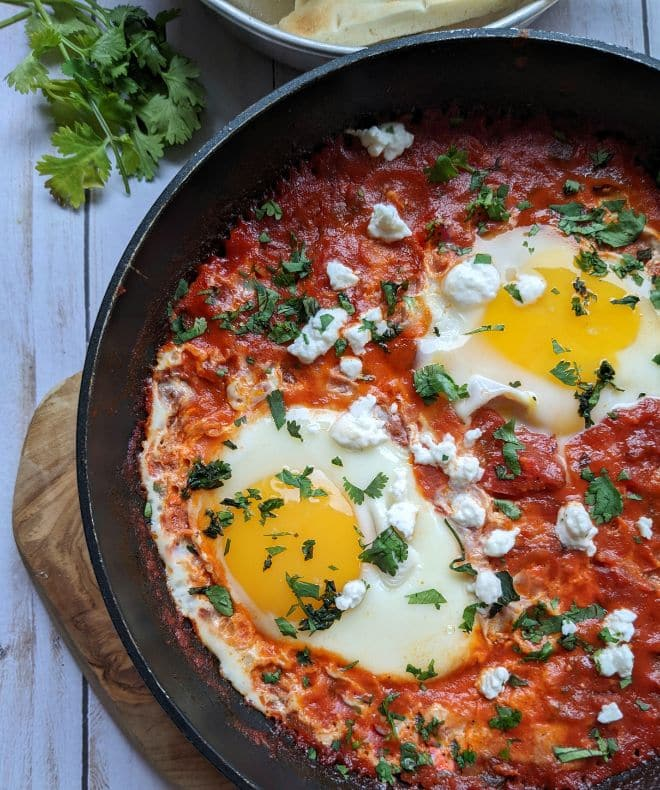

Shakshuka

This is shakshuka. It's really good and pretty straightforward to make. The best part is that it only uses one pan. Even someone who is inept at cooking like myself can make this. Honestly, I don't think the exact amounts of this stuff really matters because it turns out good any way you do it as long as you've got some of the spices in there.
Ingredients
- Olive oil
- 1 onion, diced
- 1 bell pepper, diced
- 4 garlic cloves, chopped
- 2+ tsp paprika
- 1+ tsp cumin (I like more)
- 1/4 tsp chili powder (I like more, again)
- 1 28oz can of diced tomatoes
- 4-6 eggs
- Goat cheese (optional)
Instructions
- Heat a pan with olive oil on medium, then add chopped onion and bell pepper. Cook for 5ish minutes.
- Add garlic and spices. Cook for another minute.
- Pour in can of tomatoes and get it to a simmer.
- Make a small divet in the pan for each egg you plan to add. Crack an egg into each divet and cook for 5-8 minutes.
- Add goat cheese on top if you want.
- I like eating it with bread/toast, so do that if you want.
Home